Силовая установка автомобиля — двигатель внутреннего сгорания
Силовой установкой любого автомобиля является двигатель внутреннего сгорания(рис. 2.1).
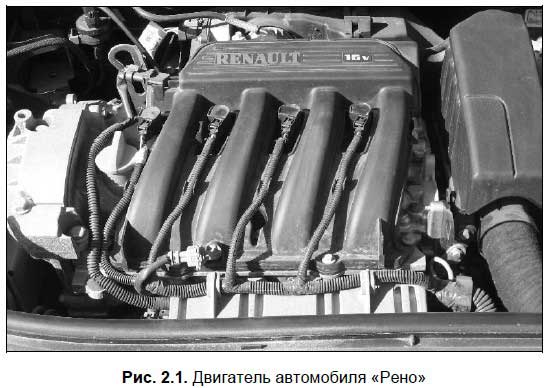
В данной главе мы расскажем о его устройстве и основных принципах работы.
Как и почему работает мотор автомобиля?Работа двигателя внутреннего сгорания базируется на превращении тепловой энергии, образующейся в результате сгорания топлива, в механическую энергию, которая и применяется для приведения автомобиля в движение. При этом двигатель включает в себя следующие агрегаты, детали и узлы: головка блока цилиндров, блок цилиндров, поршни, поршневые кольца, поршневые пальцы, шатуны, коленчатый вал, маховик, распределительный вал с кулачками, клапана, свечи зажигания (рис. 2.2).
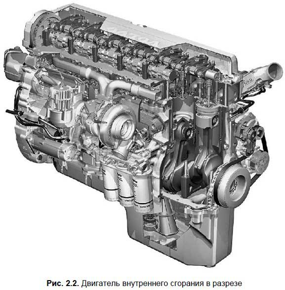
Автомобили малого и среднего класса оборудуются обычно четырехцилиндровыми двигателями внутреннего сгорания. Именно такими моторами оснащались «Москвичи» и «Жигули» — самые известные представители советского автопрома. Машины среднего и большого класса могут оснащаться и шести-, и восьми-, и двенадцатицилиндровыми моторами. Здесь прослеживается следующая закономерность: чем больше цилиндров — тем мощнее мотор, но, с другой стороны, и тем больше топлива он будет расходовать.
Чтобы лучше уяснить принцип работы двигателя внутреннего сгорания, рассмотрим его на примере одноцилиндрового бензинового мотора. Его главной частью является цилиндр, внутренняя поверхность которого отполирована до зеркального состояния. Наглядно представить цилиндр очень просто — достаточно перевернуть вверх дном простой стакан. На цилиндре установлена съемная головка, а внутри его располагается поршень (рис. 2.3).
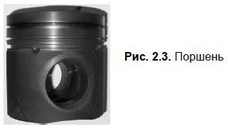
Поршень двигается внутри цилиндра вертикально — вверх-вниз. Снаружи по окружности поршня в специальных канавках расположены поршневые кольца. Дело в том, что поршень не прилегает плотно к внутренней поверхности цилиндра, а поршневые кольца, во-первых, препятствуют попаданию вниз газа, образующегося при работе двигателя, а во-вторых — не «пускают» моторное масло в камеру сгорания (она находится над верхним положением поршня).
Поршень монтируется на шатуне с помощью поршневого пальца, а шатун, в свою очередь — на кривошипе коленчатого вала (рис. 2.4).
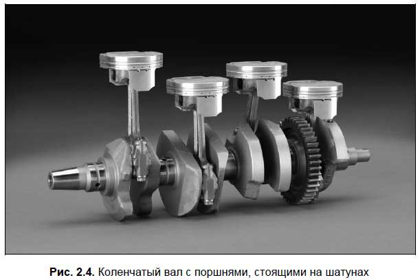
При сгорании горючей смеси образующиеся газы расширяются и давят на поверхность поршня, в результате чего он движется вниз и через шатун передает свою энергию на коленчатый вал, заставляя его вращаться. На конце коленвала находится маховик — массивный металлический диск. Он обеспечивает инерционное вращение коленчатого вала, благодаря чему совершаются подготовительные такты рабочего цикла двигателя.
Горючая смесь, представляющая собой смесь паров бензина и воздуха, поступает в камеру сгорания через впускной клапан, а после сгорания превращается в выхлопные газы и выходит через выпускной клапан. И впускной, и выпускной клапана открываются тогда, когда их толкает соответствующий кулачок распределительного вала, и вновь плотно закрывают отверстие с помощью мощных пружин, когда кулачок уходит.
Распределительный вал приходит в движение от коленчатого вала. В головке блока цилиндров есть специальное отверстие с резьбой, в которое вкручивается свеча; именно она дает искру, от которой воспламеняется горючая смесь. На каждый цилиндр двигателя приходится одна свеча (следовательно, у четырехцилиндрового двигателя имеется четыре свечи, у восьмицилиндрового — восемь и т. д.).
При движении вверх-вниз поршень поочередно достигает двух крайних положений — верхнего и нижнего: в этих положениях он максимально удален от центральной оси коленчатого вала. Верхнее крайнее положение поршня называется верхней мертвой точкой,а нижнее крайнее его положение — нижней мертвой точкой(сокращенно соответственно ВМТ и НМТ). Расстояние между верхней и нижней мертвыми точками называется ходом поршня.
Когда поршень находится в верхней мертвой точке, над ним остается пространство, которое называется камера сгорания;именно в этом пространстве воспламеняется и сгорает горючая смесь. В результате воспламенения образуется нечто вроде минивзрыва, который отталкивает поршень вниз — именно в этот момент происходит превращение тепловой энергии в механическую: двигаясь вниз, поршень толкает коленчатый вал, от которого крутящий момент передается на ведущие колеса автомобиля (более подробно о том, как это происходит, вы узнаете позже). Объем, занимаемый камерой сгорания, так и называется — объем камеры сгорания.
Объем, который находится в пространстве между ВМТ и НМТ, называется рабочим объемом цилиндра.Если сложить объем камеры сгорания и рабочий объем цилиндра, получится полный объем цилиндра.
Сумма полных объемов всех цилиндров двигателя внутреннего сгорания называется рабочим объемом двигателя.
Рабочий цикл двигателя внутреннего сгорания— это определенная последовательность процессов, периодически совершающихся в каждом цилиндре.
Важно.
Каждый из рабочих процессов происходит в течение одного хода поршня и называется тактом.
Все двигатели внутреннего сгорания делятся на две категории: четырехтактные и двухтактные. Как нетрудно догадаться, в первом случае один рабочий цикл совершается за четыре хода поршня, а во втором — за два хода поршня. Отметим, что современные автомобили, за редким исключением, оснащаются четырехтактными моторами. А двухтактные двигатели устанавливаются обычно на мотоциклах, мопедах, моторных лодках и т. п.
Рабочий цикл четырехтактного двигателя внутреннего сгорания включает в себя следующие такты: впуск, сжатие, рабочий ход и выпуск.
Начинается рабочий цикл с первого такта — впуска горючей смеси в цилиндр двигателя. Отметим, что топливо сгорает в камере сгорания не в чистом виде, а в виде смеси его паров с воздухом. Для подготовки топливно-воздушной смеси предназначен специальный прибор, который называется карбюратор (но в современных машинах карбюраторы, как правило, не используются — там эти функции возложены на специальные электронные приборы).
Смесь попадает в цилиндр в результате открытия впускного клапана, на который оказывает необходимое воздействие соответствующий кулачок распределительного вала. Знайте, что в этот момент поршень непременно располагается в ВМТ и начинает движение вниз в направлении НМТ. Получается, что, двигаясь вниз, поршень засасывает в цилиндр горючую смесь через открывшийся впускной клапан. Этот процесс продолжается, пока поршень не достигнет НМТ: одновременно с этим впускной клапан герметично закрывается под воздействием соответствующих пружин.
Важно.
При заполнении цилиндра горючей смесью она смешивается с остатками находящихся там выхлопных газов (они удаляются из цилиндра не полностью). После этого смесь называется рабочей смесью.
Пока совершается первый такт работы двигателя, коленвал проворачивается на пол-оборота.
После того как поршень достиг НМТ, впускной клапан плотно закрылся, а цилиндр заполнился рабочей смесью, начинается второй такт. В течение второго такта поршень поднимается вверх — от НМТ к ВМТ, сильно сжимая при этом рабочую смесь. В соответствии с законами физики температура рабочей смеси при сжатии существенно повышается. В тот момент, когда поршень достигает ВМТ, температура этой смеси составляет порядка 300–400 градусов по Цельсию. Второй такт завершается в момент максимального сжатия рабочей смеси, т. е. когда поршень достигает ВМТ. Пока совершается второй такт, коленвал проворачивается еще на пол-оборота. Получается, что за первые два такта работы двигателя коленвал делает один полный оборот.
Во время третьего такта работы двигателя тепловая энергия преобразуется в механическую. Когда поршень достигает ВМТ и рабочая смесь становится максимально сжатой, между электродами свечи зажигания проскакивает электрическая искра — и смесь воспламеняется. Сразу после этого она начинает активно расширяться и сильно давит на поршень, который находится в ВМТ. Другого выхода для энергии сгорания нет, так как оба клапана плотно закрыты. Под давлением поршень вынужден двигаться вниз, передавая свое движение через шатун на коленвал (а именно — на свой кривошип), заставляя его вращаться. Именно это вращение и заставляет в конечном итоге двигаться автомобиль. Коленвал за время совершения третьего такта проворачивается еще на пол-оборота.
Последний, четвертый такт рабочего цикла двигателя — выпуск отработанных (выхлопных) газов. Он начинается в тот момент, когда после третьего такта поршень достигает НМТ и вновь начинает подниматься вверх. При этом под воздействием соответствующего кулачка распредвала открывается выпускной клапан, и двигающийся вверх поршень выдавливает отработанные газы из цилиндра. После этого выпускной клапан под воздействием пружин закрывается. Затем выхлопные газы через глушитель и выхлопную трубу выводятся в атмосферу.
Завершается четвертый такт, когда поршень достигает ВМТ и закрывается выпускной клапан. За время совершения этого такта коленвал проворачивается еще на пол-оборота. Соответственно, за четыре такта работы двигателя внутреннего сгорания (т. е. за один рабочий цикл) коленчатый вал делает два полных оборота. После этого вновь начинается первый такт и т. д.
Что такое газораспределительный механизм?Газораспределительный механизм(сокращенно ГРМ) предназначен для обеспечения поступления горючей смеси в цилиндры двигателя, а также выпуска отработавших газов. ГРМ включает в себя распределительный вал, рычаги, ремень или цепь ГРМ, впускные и выпускные клапана с возвратными пружинами, впускные и выпускные каналы.
Распределительный вал(сокращенно — распредвал, рис. 2.5) располагается в головке блока цилиндров, вдоль ее верхней части. Главными функциональными элементами распредвала являются кулачки,число которых соответствует общему числу всех клапанов (как впускных, так и выпускных). Распредвал установлен относительно клапанов так, что каждому из них соответствует свой кулачок. Когда распредвал вращается, его кулачки в определенной последовательности давят на соответствующие клапана, и те своевременно открываются. Когда кулачок перестает давить на клапан, он под воздействием возвратной пружины становится на прежнее место, герметично закрывая отверстие.
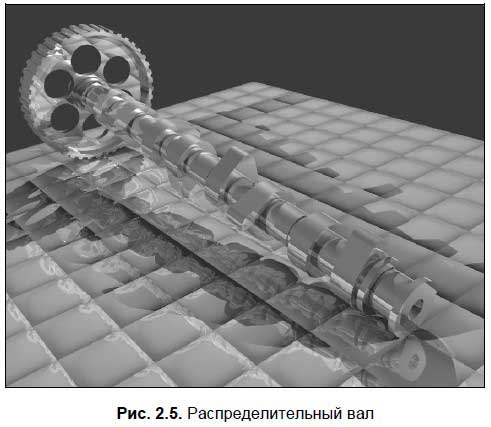
Другими словами, распредвал обеспечивает своевременное и согласованное с движением поршней в цилиндрах открытие и закрытие впускных и выпускных клапанов. Поэтому впускной клапан откроется именно в самом начале первого такта, когда поршень находится в ВМТ, и закроется сразу, как только поршень достигнет НМТ. А выпускной клапан откроется точно в конце третьего такта, когда поршень еще находится в НМТ, и плотно закроет отверстие сразу, как только он достигнет ВМТ.
Энергию вращения распредвал получает от коленвала, с которым он соединен либо цепью, либо зубчатым ремнем ГРМ (рис. 2.6).
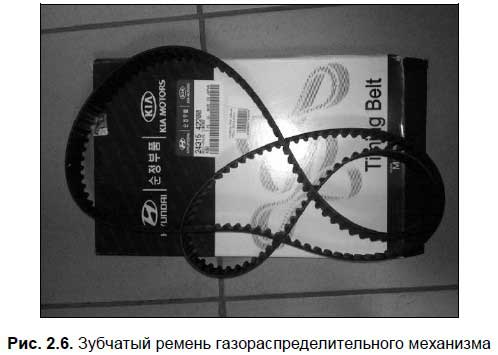
На конце распредвала для этого установлена специальная шестерня, а на конце коленчатого вала — либо зубчатый шкив, либо звездочка. Что именно используется в ГРМ — ремень или цепь, зависит от конкретной модели автомобиля.
Примечание.
Цепь все время должна быть натянута соответствующим образом, и для этого применяется специальный натяжитель, который монтируется в комплекте с башмаком. Если же в автомобиле применяется ремень ГРМ, то его требуемое натяжение обеспечивается с помощью соответствующего натяжного ролика.
Учтите, что разрыв цепи или ремня ГРМ грозит серьезной поломкой мотора (будут погнуты клапана и др.), в результате чего придется делать сложный и дорогостоящий капитальный ремонт. Обычно ремень ГРМ выдерживает пробег порядка 60 000 км, а цепь считается более надежной. Также очень важными деталями являются ролики ремня ГРМ — они со временем изнашиваются, и их также необходимо своевременно менять (поломка ролика чревата тем же, что и разрыв ремня ГРМ).
Назначение кривошипно-шатунного механизмаКривошипно-шатунный механизм (сокращенно КШМ) обеспечивает преобразование поступательно-вращательного движения поршня внутри цилиндра во вращательное движение коленчатого вала двигателя. У стандартного четырехцилиндрового мотора КШМ включает в себя блок цилиндров с картером, головку блока цилиндров, поддон картера двигателя, поршни в комплекте с поршневыми кольцами и пальцами, шатуны (на которых крепятся поршни), коленчатый вал и маховик.
Главная часть КШМ (да и двигателя вообще) — это блок цилиндров. Он состоит не только из цилиндров (рис. 2.7) и деталей поршневой группы, но и целого ряда прочих элементов: каналов, заглушек, подшипников, сверлений. Коленвал, который установлен на специальных подшипниках, вращается именно в блоке цилиндров.
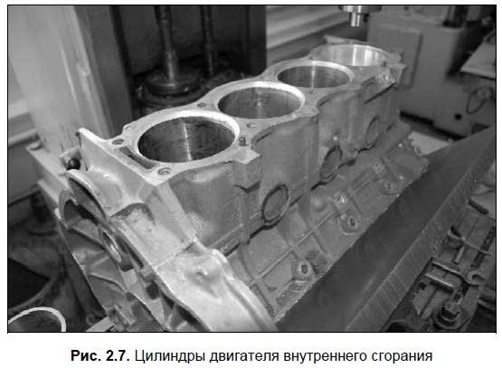
Внизу блока цилиндров расположен картер. Внутри блока цилиндров во время работы двигателя постоянно циркулирует охлаждающая жидкость: летом это может быть простая вода, в холодный же сезон необходимо использовать тосол или антифриз. Также внутри блока цилиндров проходят масляные каналы, которые относятся к системе смазки двигателя.
Примечание.
Немалая доля навесного моторного оборудования монтируется именно на блоке цилиндров, и при включенном двигателе работает с ним как единое целое.
Что касается назначения и принципа работы поршня и иных деталей поршневой группы, то об этом мы уже говорили выше. Напомним лишь, что под силой мощного давления, которое образуется в цилиндре после сгорания рабочей смеси, поршень движется вниз и передает свое движение через шатун (на котором он установлен) на коленчатый вал, образуя тот самый крутящий момент, с помощью которого автомобиль и приводится в движение.
Знайте, что двигатель внутреннего сгорания работает в довольно жестком режиме. На холостых оборотах (т. е. когда мотор работает, но машина стоит на месте, находясь на нейтральной передаче) коленчатый вал вращается со скоростью 600–900 оборотов в минуту (или около 10–16 оборотов в секунду). Во время движения со средней скоростью мотор работает еще интенсивнее, и коленчатый вал крутится со скоростью от 2000 до 3000 оборотов в минуту. А у современных спортивных авто скорость вращения коленвала может зашкаливать за 200 оборотов в секунду (10 000 — 13 000 оборотов в минуту).
Следовательно, поршни в цилиндрах перемещаются вверх-вниз очень быстро. Ранее мы уже отмечали, что за один полный оборот коленвала поршень успевает дважды пройти расстояние между ВМТ и НМТ. Так вот: эти движения он выполняет буквально за какие-то доли секунды. Если к этому добавить мощное давление, а также высокую температуру в каждом цилиндре, то условия работы двигателя внутреннего сгорания можно назвать экстремальными.
Система смазкиДля работы двигателя внутреннего сгорания необходимо обеспечение тщательной смазки всех его трущихся элементов — в противном случае он будет выходить из строя чуть ли не моментально. Для этого предназначена система смазки двигателя, с которой мы здесь кратко и познакомимся.
Система смазки двигателя внутреннего сгорания включает в себя перечисленные ниже элементы.
? Маслоналивная горловина.
? Масляный фильтр.
? Поддон картера.
? Масляный насос с маслоприемником.
? Редукционный клапан с пружиной.
? Каналы для доставки масла под давлением.
Маслоналивная горловина находится вверху двигателя и предназначена для залива масла при его замене или добавления масла при его недостаточном количестве. Для удобства в маслоналивную горловину можно вставлять воронку.
Масляный фильтр (рис. 2.8) необходим для очистки моторного масла от всяких примесей (металлической стружки, опилок и др.). Очистка масла должна производиться перед его подачей в систему, поэтому масляный фильтр находится сразу после масляного насоса. Масляный фильтр следует периодически менять — одновременно с заменой моторного масла.
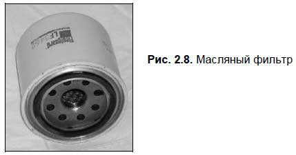
Находящееся в двигателе моторное масло хранится в поддоне картера. При заливке масла через горловину оно проходит через двигатель и опускается в этот поддон, который находится непосредственно под двигателем.
Важно.
Количество масла в двигателе должно находиться в пределах установленного минимума и максимума. Если моторного масла недостаточно, то детали двигателя быстро выйдут из строя, если же его слишком много — то в системе возникнет повышенное давление масла, что, в свою очередь, может повлечь за собой другие неисправности. Поэтому и при недостаточном, и при избыточном количестве масла эксплуатировать двигатель нельзя.
Для проверки уровня моторного масла имеется специальный металлический щуп, который вставлен в отверстие картера двигателя. На щупе нанесены две пометки — минимального (min) и максимального (max) уровня масла. Учтите, что проверять уровень масла нужно не ранее, чем через 7-10 минут после выключения двигателя. В противном случае оно не успеет полностью стечь в поддон, и, следовательно, на щупе отобразится недостоверная информация об уровне масла (создастся впечатление, что его слишком мало). Учтите, что сколько-то моторного масла постоянно сгорает в двигателе — это нормально. Принято считать, что предельно допустимый расход масла должен составлять не более 2,5 % от объема израсходованного топлива в старых автомобилях, и не более 1,25 % — в новых автомобилях.
Многие новички игнорируют тот факт, что используемое моторное масло должно соответствовать климату и температуре окружающего воздуха. В частности нельзя в двадцатиградусный мороз заливать в мотор масло, предназначенное для эксплуатации в летнее время года, поскольку в морозную погоду оно будет недостаточно вязким, а это быстро приведет к преждевременному износу деталей двигателя.
Помни об этом.
На этикетке банки с моторным маслом всегда стоит обозначение вязкости масла (оно находится после букв SAE). Зимние сорта масла обозначаются буквой W, которая может быть как заглавной, так и строчной (например, SAE 10 W, SAE 15 w и т. д.). Что касается летних сортов, что у них никакая дополнительная буква не ставится (SAE 30 и т. д.). В последние годы получили широкое распространение всесезонные сорта масла; у них в маркировке сначала следует зимний показатель, а после него — летний (например, SAE 10 W-50, SAE 15 W/50 и т. д.).
Для обеспечения подачи масла к трущимся деталям двигателя предназначен специальный прибор — масляный насос. С механической точки зрения масляный насос устроен несложно: он состоит из двух шестерен и имеет привод от коленвала двигателя. Коленвал приводит в движение шестерни масляного насоса, которые своими зубьями нагнетают масло в главную масляную магистраль.
Еще один важный элемент системы смазки — редукционный клапан с пружиной. Он необходим для предотвращения возникновения избыточного давления в масляных каналах двигателя. Когда это давление становится слишком высоким, пружина сжимается и часть масла вытекает из масляных каналов обратно в поддон картера.
В современных двигателях внутреннего сгорания часть деталей смазывается под давлением, а часть — с помощью масляных брызг и масляного тумана, которые образуются естественным путем в процессе работы двигателя. Такая система смазки, в которой используются разные способы подачи масла, называется комбинированной. Детали, которые в процессе работы двигателя испытывают наибольшую нагрузку и являются сильно трущимися (например, подшипники распределительного и коленчатого валов), смазываются маслом под давлением, а все остальные детали — путем его разбрызгивания.
Когда вращается коленвал, его кривошипы с размаху «ныряют» в моторное масло, находящееся в поддоне картера. При этом масло сильно разбрызгивается. Масляные брызги, а также масляный туман, который возникает в результате очень быстрого вращения коленвала, обильно оседают на внутренней поверхности цилиндров, на детали шатунно-поршневой группы и газораспределительного механизма. В результате получается, что все эти детали очень обильно смазываются маслом (можно даже сказать — поливаются), что обеспечивает их продолжительную работу и высокую износостойкость.
На панели приборов любого автомобиля имеется красная лампочка давления масла. Обычно она загорается, когда водитель включает зажигание, но после запуска мотора она должна погаснуть. Если лампочка давления масла горит при работающем двигателе — его необходимо срочно заглушить и выяснить причину: вероятнее всего, в системе смазки недостаточно масла. Причины этому могут быть разные: повреждение прокладки головки блока цилиндров, плохо затянутая сливная пробка в поддоне картера, износ сальников, повреждение наружных маслопроводных шлангов, износ подшипников коленчатого вала, износ масляного насоса и др.
Повышенный расход масла может быть вызван износом деталей кривошипно-шатунного механизма. Проверьте состояние выхлопных газов: если из выхлопной трубы идет голубой или синий дым — значит, двигатель серьезно неисправен. Если выхлопные газы бесцветны либо чуть заметны — скорее всего, все в порядке.
Определить, подтекает ли моторное масло из системы смазки, можно по характерным следам на асфальте в том месте, где стоял автомобиль (точнее — под двигателем). Вы можете без особых проблем установить место подтекания, но вот устранить его причину — вряд ли: в чем бы она ни заключалась, это будет сложный и трудоемкий процесс, и ремонт придется делать на станции технического обслуживания.
Все моторное масло делится на три вида: минеральное, полусинтетическое и синтетическое. Минеральное масло производится из нефти, полусинтетическое содержит искусственные добавки, а синтетическое является полностью искусственным. Самым высококачественным является синтетическое масло, далее идет «полусинтетика», и затем — минеральное масло.
Система питанияСистема питания — неотъемлемая часть любого двигателя внутреннего сгорания. Она предназначена для решения перечисленных ниже задач.
? Хранение топлива.
? Очистка топлива и подача его в двигатель.
? Очистка воздуха, используемого для приготовления горючей смеси.
? Приготовление горючей смеси.
? Подача горючей смеси в цилиндры двигателя.
? Вывод отработавших (выхлопных) газов в атмосферу.
Система питания легкового автомобиля включает в себя следующие элементы: топливный бак, топливные шланги, топливный фильтр (их может быть несколько), топливный насос, воздушный фильтр, карбюратор (инжектор или иной прибор, используемый для приготовления горючей смеси). Отметим, что в современных автомобилях карбюраторы используются довольно редко.
Топливный бак располагается внизу или в задней части автомобиля: эти места наиболее безопасны. Топливный бак соединяется с прибором, который создает горючую смесь, посредством топливных шлангов, которые проходят почти через весь автомобиль (обычно — по днищу кузова).
Однако любое топливо должно пройти предварительную очистку, которая может включать в себя несколько степеней. Если вы заливаете топливо из канистры — используйте воронку с сетчатым фильтром. Помните, что бензин обладает большей текучестью, чем вода, поэтому для его фильтрации можно использовать совсем мелкие сетки, у которых ячейки почти не видны. Если ваш бензин содержит примесь воды, то после фильтрации через тонкую сетку вода останется на ней, а бензин — просочится.
Это должен знать каждый.
Помните, что любые примеси, содержащиеся в топливе (пыль, песок, вода, вязкие компоненты, грязь и т. п.), могут в короткий срок вывести систему питания из строя.
Очистка топлива при заливке его в топливный бак называется предварительной очисткой или первой степенью очистки — потому, что на пути топлива до двигателя оно еще не раз пройдет подобную процедуру.
Вторая степень очистки производится с использованием специальной сетки, находящейся на топливозаборнике внутри топливного бака. Даже если на первой стадии очистки в топливе остались какие-то примеси, то они будут удалены на втором этапе.
Для наиболее качественной (тонкой) очистки топлива, поступающего в топливный насос, применяется топливный фильтр (рис. 2.9), находящийся в моторном отсеке. Кстати, в некоторых случаях фильтр устанавливается и до, и после топливного насоса — с целью улучшения качества очистки поступающего в двигатель топлива.
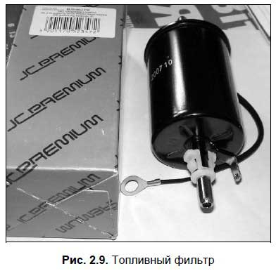
Важно.
Топливный фильтр следует менять через каждые 15 000 — 25 000 км пробега (в зависимости от конкретной марки и модели автомобиля).
Для обеспечения подачи топлива в двигатель используется топливный насос. Обычно он включает в себя следующие детали: корпус, диафрагма с приводным механизмом и пружиной, впускной и выпускной (нагнетательный) клапаны. Также в насосе присутствует еще один сетчатый фильтр: он обеспечивает последнюю, четвертую стадию очистки топлива перед подачей его в двигатель. Среди прочих деталей топливного насоса отметим шток, нагнетательный и всасывающий патрубки, рычаг ручной подкачки топлива и др.
Топливный насос может приводиться в действие от валика привода масляного насоса либо от распределительного вала двигателя. При вращении любого из этих валов находящийся на них эксцентрик оказывает давление на шток привода топливного насоса. Шток, в свою очередь, давит на рычаг, а рычаг — на диафрагму, в результате чего та опускается вниз. После этого над диафрагмой образуется разряжение, под влиянием которого впускной клапан преодолевает усилие пружины и открывается. В результате определенная порция топлива засасывается из топливного бака в пространство над диафрагмой.
Когда затем эксцентрик «отпускает» шток топливного насоса, рычаг перестает давить на диафрагму, в результате чего за счет жесткости пружины та поднимается вверх. При этом образуется давление, под действием которого впускной клапан плотно закрывается, а нагнетательный — открывается. Топливо над диафрагмой направляется в карбюратор (или иной прибор, используемый для приготовления горючей смеси — например, инжектор). Когда эксцентрик в очередной раз начинает давить на шток, топливо всасывается и процесс повторяется заново.
Однако очищать следует не только топливо, но и воздух, используемый для приготовления горючей смеси. Для этого используется специальный прибор — воздушный фильтр. Он устанавливается в специальный корпус после воздухозаборника и закрывается крышкой (рис. 2.10).
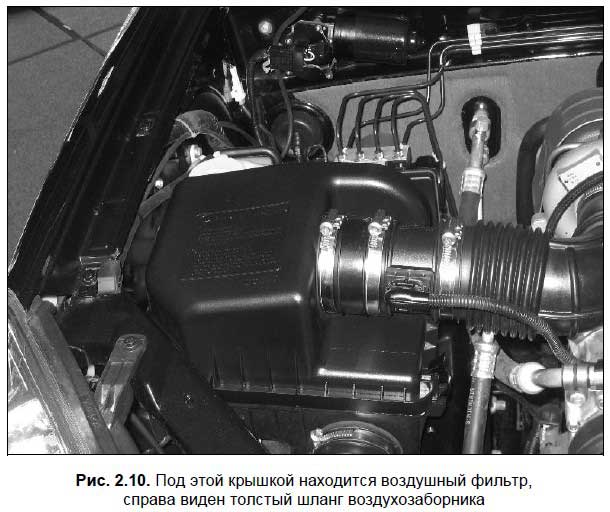
Воздух, проходя через фильтр, оставляет на нем весь содержащийся мусор, пыль, примеси и т. д., и для приготовления горючей смеси используется уже в очищенном виде.
Помни об этом.
Воздушный фильтр является расходным материалом, который следует менять через определенный пробел (обычно 10 000 — 15 000 км). Засорившийся фильтр затрудняет прохождение через него воздуха. Это становится причиной перерасхода топлива, поскольку горючая смесь будет содержать много топлива и мало воздуха.
Очищенные компоненты горючей смеси (бензин и воздух) каждый своей дорогой поступают в карбюратор или иной прибор, специально предназначенный для создания горючей смеси из паров бензина и воздуха. Готовая смесь подается в цилиндры двигателя.
Примечание.
Карбюратор автоматически регулирует состав горючей смеси (соотношение паров бензина и воздуха), а также ее количество, подаваемое в цилиндры, в зависимости от режима работы двигателя (холостой ход, размеренная езда, ускорение и др.). Как мы уже отмечали ранее, на современных автомобилях карбюраторы используются редко (всем управляет электроника, самый известный такой прибор — инжектор), но советские и российские автомобили (ВАЗ, АЗЛК, ГАЗ, ЗАЗ) выпускались с карбюратором. Поскольку на таких авто и сегодня ездит пол-России, мы далее подробно рассмотрим принцип работы и устройство карбюратора.
Карбюратор (рис. 2.11) состоит из большого количества разных деталей и включает в себя ряд систем, необходимых для стабильной работы двигателя.
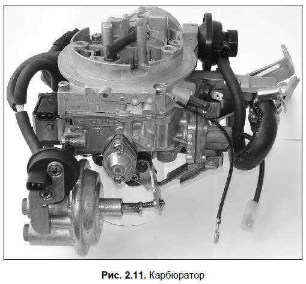
Ключевыми элементами типового карбюратора являются: поплавковая камера, поплавок с игольчатым запорным клапаном, смесительная камера, распылитель, воздушная заслонка, дроссельная заслонка, диффузор, топливные и воздушные каналы с жиклерами.
В общем случае принцип производства горючей смеси в карбюраторе выглядит так.
Когда поршень при впуске в цилиндр горючей смеси начинает двигаться от ВМТ к НМТ, над ним в соответствии с законами физики образуется разряжение. Соответственно, струя воздуха после предварительной очистки с помощью воздушного фильтра и прохождения через карбюратор поступает в эту зону (иными словами, ее туда засасывает).
При прохождении очищенного воздуха через карбюратор из поплавковой камеры через распылитель всасывается топливо. Этот распылитель расположен в самом узком месте смесительной камеры, называемом «диффузор». Входящим потоком очищенного воздуха бензин, вытекающий из распылителя, как бы «дробится», после чего смешивается с воздухом, и происходит так называемое первоначальное смешивание. Окончательное же перемешивание бензина с воздухом осуществляется на выходе из диффузора, а затем горючая смесь поступает в цилиндры двигателя.
Другими словами, в карбюраторе для получения горючей смеси применяется принцип обычного пульверизатора.
Однако мотор будет работать стабильно и надежно лишь тогда, когда в поплавковой камере карбюратора уровень бензина будет постоянным. Если он поднимется выше установленного предела, то в смеси будет слишком много топлива. Если же уровень бензина в поплавковой камере ниже установленного предела — горючая смесь будет слишком бедной. Для решения этой проблемы в поплавковой камере предназначен специальный поплавок, а также игольчатый запорный клапан. Когда бензина в поплавковой камере остается слишком мало, то поплавок опускается вместе с игольчатым запорным клапаном, позволяя тем самым бензину беспрепятственно поступать в камеру. Когда топлива становится достаточно, поплавок всплывает и клапаном перекрывает путь поступления бензина. Чтобы наглядно увидеть этот принцип «в действии», посмотрите на работу простого сливного бачка в туалете.
Чем сильнее водитель нажимает на педаль газа, тем больше открывается дроссельная заслонка (в исходном положении она закрыта). При этом в карбюратор поступает больше бензина и воздуха. Чем больше водитель отпускает педаль газа, тем сильнее закрывается дроссельная заслонка, и в карбюратор поступает меньше бензина и воздуха. Мотор работает менее интенсивно (падают обороты), поэтому крутящий момент, передаваемый на колеса автомобиля, уменьшается, соответственно — автомобиль снижает скорость.
Но даже при полном отпускании педали газа (и закрытии дроссельной заслонки) мотор не заглохнет. Это объясняется тем, что при работе двигателя на холостых оборотах применяется другой принцип. Сущность его состоит в том, что карбюратор оборудован каналами, специально предназначенными для того, чтобы воздух мог проникнуть под дроссельную заслонку, смешиваясь по пути с бензином. При закрытой дроссельной заслонке (на холостых оборотах) воздух вынужденно попадает в цилиндры через эти каналы. При этом он «высасывает» бензин из топливного канала, перемешивается с ним, и эта смесь поступает в поддроссельное пространство. В этом пространстве смесь окончательно принимает требуемое состояние и поступает в цилиндры двигателя.
Примечание.
Для большинства двигателей при работе на холостом ходу оптимальная скорость вращения коленвала составляет 600–900 оборотов в минуту.
В зависимости от текущего режима работы мотора карбюратор готовит горючую смесь требуемого качества. В частности при пуске остывшего мотора горючая смесь должна содержать больше топлива, чем при работе прогретого двигателя. Стоит отметить, что самый экономичный режим работы двигателя — это ровная езда на самой высокой передаче на скорости примерно 60–90 км/ч. При движении в таком режиме карбюратор создает обедненную горючую смесь.
Примечание.
Автомобильные карбюраторы могут иметь разные модели и варианты исполнения. Здесь мы не будем приводить описание карбюраторов разных модификаций, так как нам достаточно иметь хотя бы общее представление о работе карбюратора. Подробную информацию о том, как функционирует карбюратор в конкретном автомобиле, можно найти в руководстве по эксплуатации и ремонту этой машины.
Как мы уже отмечали выше, в процессе работы двигателя внутреннего сгорания образуются выхлопные газы. Они представляют собой продукт сгорания рабочей смеси в цилиндрах двигателя.
Именно выхлопные газы выводятся из цилиндра во время последнего, четвертого такта его рабочего цикла, который так и называется — выпуск. Затем они выводятся в атмосферу. Для этого в каждом автомобиле существует механизм выпуска отработанных газов, который является частью системы питания. Причем его задачей является не только отвод их из цилиндров и выпуск в атмосферу, что само собой, но и уменьшение шума, которым сопровождается данный процесс.
Дело в том, что выпуск отработанных газов из цилиндра двигателя сопровождается очень громким шумом. Он настолько силен, что без глушителя (специального прибора, поглощающего шумы, рис. 2.12) эксплуатация автомобилей была бы невозможной: рядом с работающим автомобилем невозможно было бы находиться из-за производимого им шума.
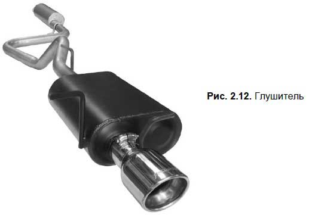
Механизм выпуска отработанных газов стандартного автомобиля включает в себя следующие составные элементы:
? выпускной клапан;
? выпускной канал;
? приемная труба глушителя (на водительском сленге — «штаны»);
? дополнительный глушитель (резонатор);
? основной глушитель;
? соединительные хомуты, с помощью которых части глушителя соединяются между собой.
Во многих современных автомобилях, кроме перечисленных элементов, используется также специальный катализатор нейтрализации выхлопных газов. Название прибора говорит само за себя: он предназначен для сокращения количества вредных веществ, содержащихся в выхлопных газах автомобиля.
Механизм выпуска отработанных газов работает довольно просто. Из цилиндров двигателя они поступают в приемную трубу глушителя, которая соединена с дополнительным глушителем, а тот, в свою очередь — с основным глушителем (концом которого является выхлопная труба, торчащая сзади автомобиля). Резонатор и основной глушитель внутри имеют довольно сложную структуру: так находятся многочисленные отверстия, а также небольшие камеры, которые расположены в шахматном порядке, в результате чего образуется сложный запутанный лабиринт. Когда выхлопные газы проходят по этому лабиринту, они намного снижают свою скорость и выходят из выхлопной трубы практически бесшумно.
Отметим, что выхлопные газы автомобиля содержат множество вредных веществ: окись углерода (так называемый угарный газ), окись азота, соединения углеводородов и др. Поэтому никогда не прогревайте автомобиль в закрытом помещении — это смертельно опасно: известно очень много случаев, когда люди погибали в собственных гаражах от угарного газа.
Система зажиганияВоспламенение рабочей смеси в камере сгорания происходит по двум причинам: во-первых — из-за возникшего высокого давления (напомним, что поршень при достижении ВМТ сильно сжимает рабочую смесь), а также благодаря появлению в нужный момент электрической искры между электродами свечи зажигания. Система зажигания, которая также является неотъемлемой частью двигателя внутреннего сгорания, обеспечивает своевременное воспламенение рабочей смеси.
Существуют три вида систем зажигания: контактная, бесконтактная (транзисторная) либо электронная. Первые две считаются устаревшими, и современные автомобили оснащаются электронной системой зажигания. Отметим, что отрегулировать электронное зажигание можно только на специализированной СТО, в то время как контактное или бесконтактное зажигание можно отремонтировать и самостоятельно.
Электрическая искра в контактной системе зажигания образуется между электродами свечи зажигания в конце такта сжатия. Поскольку промежуток сжатой рабочей смеси между электродами свечи имеет высокое электрическое сопротивление, то между ними должно создаваться большое напряжение — до 24 000 вольт: только в этом случае будет вызван искровой разряд. Кстати, искровые разряды должны появляться только при определенном положении поршней в цилиндрах; кроме этого, они должны чередоваться в соответствии с установленным порядком работы цилиндров двигателя. Иначе говоря, искра не должна проскакивать во время такта впуска, сжатия или выпуска.
Контактная система батарейного зажигания включает в себя следующие составные элементы:
? источники электрического тока (аккумулятор и генератор);
? катушка зажигания;
? замок зажигания (в этот замок водитель вставляет ключ, чтобы завести автомобиль, рис. 2.13);
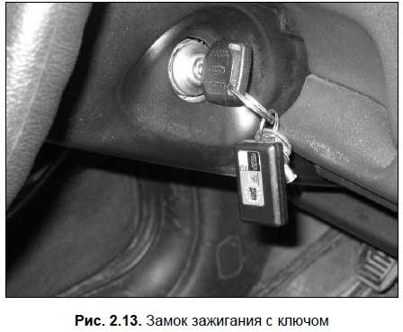
? прерыватель тока низкого напряжения
? распределитель тока высокого напряжения;
? конденсатор;
? свечи зажигания (из расчета на один цилиндр — одна свеча);
? электрические провода низкого и высокого напряжения.
Источники электрического тока обеспечивают его подачу в систему зажигания (это касается всех видов систем зажигания). При запуске двигателя источником является аккумулятор, а при работающем двигателе он постоянно получает подзарядку от генератора. Катушка зажигания преобразует ток низкого напряжения в ток высокого напряжения. Ее работа базируется на том, что, когда по первичной обмотке (обмотка низкого напряжения) проходит электрический ток, то вокруг нее создается мощное магнитное поле. Когда специально предназначенный прерыватель прекращает подачу тока, магнитное поле исчезает и пересекает большое количество витков вторичной обмотки (обмотка высокого напряжения), и в соответствии с законами физики в ней возникает ток высокого напряжения. Столь значительный рост напряжения (из 12 до 24 000 вольт) обеспечивается благодаря разнице числа витков в обмотках катушки. Образовавшееся напряжение позволяет преодолеть пространство между электродами свечи зажигания и получить электрический разряд, обеспечивающий появление искры.
Зазор между электродами свечи обычно находится в диапазоне от 0,5 мм до 1 мм. Конкретное значение может зависеть от целого ряда факторов: время года, климат, марка и модель автомобиля, качество топлива и т. д.
Важно.
Учтите, что неотрегулированный зазор между электродами свечи зажигания может стать причиной нестабильной работы мотора. Чаще всего это приводит к неработоспособности одного или нескольких цилиндров. Характерный пример — когда из четырех цилиндров функционирует лишь три, а еще один крутится «вхолостую». В такой ситуации мощность двигателя существенно падает, а потребление топлива заметно возрастает. При регулировании зазора между электродами свечи помните, что подгибать можно только боковой электрод. Запрещено подгибать центральный электрод, поскольку это может стать причиной появления трещин на керамическом изоляторе свечи зажигания (в этом случае свечу придется менять).
Замок зажигания необходим, чтобы замкнуть электрическую цепь и завести двигатель.
Прерыватель низкого напряжения предназначен для прекращения подачи тока низкого напряжения на первичную обмотку катушки зажигания, чтобы в этот момент во вторичной обмотке образовался ток высокого напряжения. Образовавшийся ток после этого поступает на центральный контакт распределителя тока высокого напряжения.
Стоит отметить, что прерыватель тока низкого напряжения и распределитель тока высокого напряжения являются одним целым и помещены в один корпус. Этот прибор называется прерыватель-распределитель, или трамблер. Контакты прерывателя находятся под крышкой распределителя зажигания. Подвижный контакт постоянно прижимается к неподвижному с помощью специально предназначенной пластинчатой пружины. Эти контакты размыкаются на очень маленький промежуток времени; это происходит в тот момент, когда набегающий кулачок приводного валика трамблера надавливает на молоточек подвижного контакта.
Чтобы контакты служили долгое время и не выходили преждевременно из строя, используется конденсатор. Он предохраняет контакты от обгорания, которое может произойти при их размыкании. Дело в том, что в момент размыкания подвижного и неподвижного контактов между ними проскакивала бы мощная искра, но конденсатор поглощает почти весь электрический разряд, в результате чего искра если и проскакивает, то совсем незначительная. Также конденсатор способствует увеличению напряжения во вторичной обмотке катушки зажигания. Дело в том, что при размыкании подвижного и неподвижного контактов прерывателя конденсатор разряжается; при этом он создает обратный ток в катушке низкого напряжения (первичной обмотке), что ускоряет процесс исчезновения магнитного поля. А в соответствии с законами физики, чем быстрее исчезает магнитное поле в первичной обмотке катушки зажигания, тем более мощный ток возникает во вторичной обмотке.
Четырехцилиндровые двигатели внутреннего сгорания обычно работают в следующей последовательности: вначале рабочая смесь воспламеняется в первом цилиндре, затем — в третьем, затем — в четвертом, и в заключение — во втором. Такой порядок оптимален в первую очередь потому, что при нем нагрузка на коленчатый вал распределяется равномерно.
Следует отметить, что ток высокого напряжения должен подаваться на свечу не в тот момент, когда поршень достиг ВМТ, а чуть ранее. Напомним, что поршни в цилиндрах движутся с очень высокой скоростью, и если искра возникнет точно в момент достижения поршнем ВМТ, сгоревшая рабочая смесь не успеет оказать на него нужное давление, следовательно — мотор заметно утратит мощность. Если же возгорание рабочей смеси произойдет немного раньше, то на поршень будет оказано максимальное давление, значит — мотор разовьет максимальную мощность.
Момент появления искры называется «угол опережения зажигания». Он наступает тогда, когда поршень не доходит приблизительно 40–60 градусов до ВМТ, если ориентироваться на угол поворота коленвала.
Самой главной деталью системы зажигания (это касается систем зажигания всех видов) является свеча зажигания(рис. 2.14). В дизельных моторах вместо свечи зажигания используется свеча накаливания. Без этого элемента в принципе невозможна работа двигателя внутреннего сгорания. Как мы уже отмечали выше, количество свечей соответствует числу цилиндров двигателя.
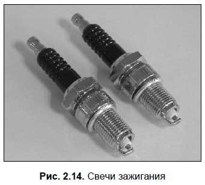
Когда ток высокого напряжения попадает на свечу, между ее электродами возникает электрический разряд, благодаря которому в камере сгорания воспламеняется рабочая смесь. Ну а что происходит дальше — мы уже знаем: рабочая смесь при сгорании оказывает давление на поршень, тот под этим воздействием движется вниз и проворачивает коленвал, с которого крутящий момент передается на ведущие колеса автомобиля.
Как правило, свеча является одной из тех деталей, которые служат довольно долго и редко нуждаются в замене. В среднем каждая свеча может «пройти» несколько десятков тысяч километров. Если все же необходимо заменить свечи — даже малоопытный автомобилист может выполнить эту работу самостоятельно. Для этого необходимо отсоединить от свечей высоковольтные провода, затем специальным свечным ключом выкрутить старые свечи и вкрутить новые. Операция несложная и выполняется буквально за 10–20 минут.
Иногда бывает трудно «на глаз» определить, какая именно свеча неисправна. Чтобы быстро найти неисправность, поочередно отсоединяйте высоковольтные провода от соответствующих свечей путем снятия их наконечников: если перебои в работе двигателя стали более заметны — значит, данная свеча исправна, а если после отсоединения свечи работа двигателя не изменилась — значит, именно она является неисправной. Дополнительным подтверждением неисправности свечи может являться то, что она после выкручивания из горячего двигателя будет несколько холоднее остальных.
Главным достоинством бесконтактной системы зажигания является то, что она имеет возможность увеличения мощности напряжения, подаваемого на электроды свечи. Это намного облегчает пуск холодного мотора, а также его работу в условиях низких температур. Кроме этого, двигатель с бесконтактной системой зажигания потребляет меньше топлива.
Главными элементами бесконтактной системы зажигания являются:
? источники электрического тока (аккумулятор и генератор);
? катушка зажигания;
? свечи зажигания;
? датчик-распределитель;
? коммутатор;
? выключатель зажигания;
? высоковольтные и низковольтные провода.
Вместо контактов прерывателя используется специальный датчик. Он посылает импульсы в коммутатор, управляющий катушкой зажигания, которая, в свою очередь, преобразует ток низкого напряжения в ток высокого напряжения.
Что касается электронной системы зажигания, то на ней мы здесь останавливаться не будем, поскольку ее устройство слишком сложное для начинающих водителей и, как мы уже отмечали ранее, ее ремонт и регулировку можно производить только на специализированных СТО.
Система охлажденияСредняя температура в цилиндре работающего двигателя находится в диапазоне от 800 до 1000 градусов, а в момент сгорания рабочей смеси она может доходить до 2000 градусов. Даже неспециалисту понятно: в таких экстремальных температурных условиях мотор долго не проработает — его детали просто перегреются и выйдут из строя. Следовательно, возникает задача охлаждения двигателя, для решения которой, а также для ускорения пуска холодного мотора, предназначена система охлаждения.
Современные автомобили оснащаются системой охлаждения жидкостного типа. Как нетрудно догадаться, охлаждающим элементом в таких системах является жидкость (вода, тосол или антифриз). Есть также и воздушные системы охлаждения (в частности такой системой оборудовался «Запорожец»), но они доказали свою неэффективность и на современных автомобилях не используются. Поэтому здесь мы будем рассматривать только жидкостную систему охлаждения.
Система охлаждения жидкостного типа включает в себя следующие элементы:
? рубашка охлаждения блока и головки блока цилиндров;
? термостат;
? насос (помпа);
? радиатор;
? расширительный бачок радиатора;
? вентилятор;
? соединительные патрубки и шланги.
Рубашка охлаждения — это комплекс каналов и отверстий в блоке и головке блока цилиндров, предназначенных для циркуляции жидкости. Циркуляция осуществляется благодаря водяному насосу, известному также под названием «помпа» (водители обычно называют его «помпа»). Водяной насос приводится в действие с помощью шкива коленвала через ременную передачу. В случае надобности натяжение ремня можно отрегулировать либо с помощью натяжного ролика привода распредвала, либо путем отклонения корпуса генератора.
Для обеспечения нормального температурного режима работы двигателя предназначен термостат (рис. 2.15).
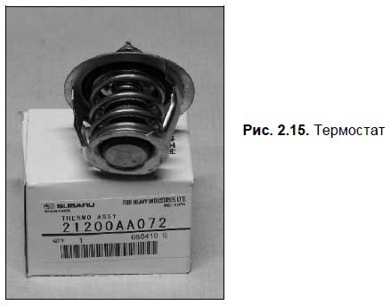
Жидкость в системе охлаждения может циркулировать или по большому (термостат открыт), или по малому (термостат закрыт) кругу. Малый круг циркуляции используется для быстрого прогрева холодного двигателя; кроме этого, по малому кругу жидкость циркулирует в холодное время года, чтобы двигатель не переохлаждался. В теплое время года жидкость циркулирует по большому кругу, поскольку в это время мотор больше нуждается в охлаждении, чем зимой. Именно термостат автоматически направляет жидкость либо по большому, либо по малому кругу циркуляции.
Для контроля температуры охлаждающей жидкости на панели приборов имеется специальный датчик. Оптимальная рабочая температура двигателя внутреннего сгорания составляет порядка 80–90 градусов. Если же температура достигает 100 градусов, то охлаждающая жидкость закипает (в этом случае из радиатора выходит характерный пар). В такой ситуации нужно срочно остановить машину и выключить мотор — иначе он от перегрева выйдет из строя.
Обычно термостат работает по следующему принципу. Как только водитель запустил холодный мотор, термостат полностью закрыт, и циркуляция жидкости осуществляется только по малому кругу. По мере прогрева двигателя термостат приоткрывается, и часть жидкости направляется на большой круг (при этом другая часть продолжает циркулировать по малому кругу). Как только температура охлаждающей жидкости в системе достигает 80–90 градусов, термостат полностью открывается, и вся жидкость начинает циркулировать по большому кругу. Если во время движения мотор переохлаждается, термостат опять частично либо полностью закрывается, и часть жидкости (или вся жидкость) вновь направляется по малому кругу.
Радиатор(рис. 2.16) — это прибор, предназначенный для охлаждения жидкости за счет встречного потока воздуха либо с помощью специального вентилятора. Радиатор установлен в передней части моторного отсека автомобиля и содержит большое количество трубок, каналов и «перепонок», с помощью которых существенно увеличивается объем одновременно охлаждающейся жидкости.
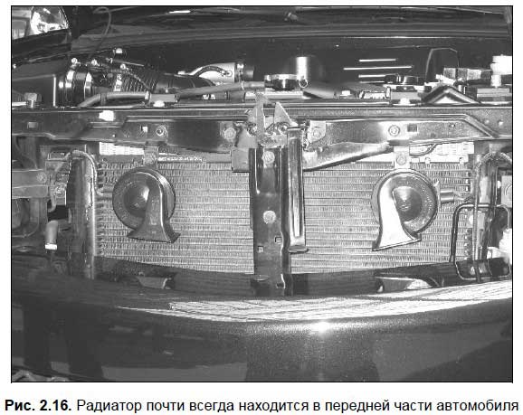
Выход радиатора из строя приводит к перегреву двигателя. Самые распространенные неисправности радиатора — это его засорение или течь. Если радиатор нагревается только вверху, а внизу — нет, значит, он засорился.
Охлаждающая жидкость в систему охлаждения автомобиля заливается через расширительный бачок (рис. 2.17).
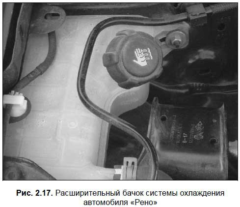
Обычно этот бачок изготовлен из пластмассы и установлен под капотом. Помимо залива жидкости, он выполняет еще одну важную функцию, а именно — компенсирует изменение объема и давления жидкости в системе при ее нагревании либо охлаждении.
Важным прибором системы охлаждения двигателя является вентилятор. Его основной задачей является увеличение потока воздуха, проходящего через радиатор при движении автомобиля. Кроме этого, вентилятор создает поток воздуха, когда двигатель работает у стоящего на месте автомобиля.
Элементы системы охлаждения (охлаждающая рубашка, помпа, радиатор и др.) соединяются между собой с помощью шлангов и патрубков. Кстати, иногда жидкость вытекает из системы охлаждения не из-за отверстия в радиаторе, а по причине плохо зажатых патрубков, либо из-за их механических повреждений (разрывы, трещины и т. д.).
Если двигатель вашего автомобиля начинает перегреваться — в первую очередь проверяйте состояние системы охлаждения. Проверьте уровень охлаждающей жидкости, степень натяжения приводного ремня вентилятора. Возможно, неисправен термостат. Кстати, в последнем случае могут проявляться следующие симптомы: двигатель автомобиля слишком долго прогревается до нормальной рабочей температуры, а затем начинает перегреваться. При этом если в автомобиле имеется датчик температуры охлаждающей жидкости, то его стрелка находится в красной зоне, хотя радиатор остается холодным. Зимой при данной неисправности заметно ухудшается обогрев салона. Термостат — прибор недорогой, на большинстве машин его замена выполняется быстро, и более-менее опытный автомобилист сможет заменить его своими силами.
Помни об этом.
Ни в коем случае не позволяйте мотору работать в состоянии перегрева. Учтите, что перегрев может случаться даже на автомобилях с исправной системой охлаждения — например, при медленном движении или стоянии в «пробке». Не забывайте, что даже непродолжительная работа перегретого мотора становится причиной деформации его частей, и устранить последствия можно будет только с помощью капитального ремонта (а иногда мотор вообще не подлежит восстановлению, и его приходится менять).
Некоторые начинающие водители при перегреве мотора не только останавливаются, выключают его и открывают капот, но еще и открывают пробку радиатора. Знайте: это очень опасно! Горячая жидкость в системе охлаждения находится под давлением, и при открытии пробки она может «выстрелить». В результате сильные ожоги от кипящей жидкости получат все, кто находится в непосредственной близости.
Это должен знать каждый.
Помните, что открывать пробку радиатора разрешается только при остывшем двигателе.
А вот для охлаждения жидкости открытие пробки радиатора абсолютно ничем не поможет.
Как мы уже отмечали ранее, в качестве охлаждающей жидкости можно использовать даже обыкновенную воду. Но это допускается лишь в теплое время года: зимой вода замерзнет, а поскольку она при замерзании расширяется, то серьезные проблемы вашей машине будут обеспечены. Поэтому в преддверии холодного времени года своевременно сливайте воду и заливайте незамерзающую жидкость (а вообще рекомендуется использовать ее круглый год).
Самой распространенной у автомобилистов охлаждающей жидкостью является тосол. В его маркировке указывается температура, которую он способен выдержать: например, тосол марки А-40 выдержит мороз до минус 40 градусов, а тосол А-65 — до минус 65 градусов. С химической точки зрения тосол представляет собой смесь дистиллированной воды с этиленгликолем и специальными присадками. Отметим, что тосол не дает никаких отложений, поскольку в его состав входит не обыкновенная, а дистиллированная вода.
Кроме тосола, в качестве охлаждающей жидкости можно использовать еще более устойчивую к низким температурам жидкость — антифриз.
Обязательно контролируйте натяжение и состояние приводного ремня водяного насоса: нет ли на нем механически повреждений, трещин, надрывов. Учтите, что если ремень порвется — ехать дальше вы не сможете: водяной насос перестанет работать, значит — прекратится циркуляция охлаждающей жидкости со всеми вытекающими отсюда последствиями. Поэтому настоятельно рекомендуется всегда иметь в машине запасной ремень, чтобы в случае необходимости была возможность его оперативной замены.
Полезный совет.
Если мощности системы охлаждения недостаточно для охлаждения мотора, включите на полную мощность печку (при этом вентилятор отопителя устанавливайте на максимум) — это позволит задействовать в системе охлаждения еще и радиатор отопителя салона.
Если из-под капота доносится характерный свистящий резкий звук — проверяйте состояние и натяжение приводного ремня, а если он в порядке — видимо, придется заменить подшипник водяного насоса.